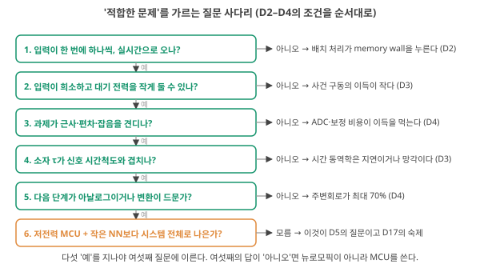
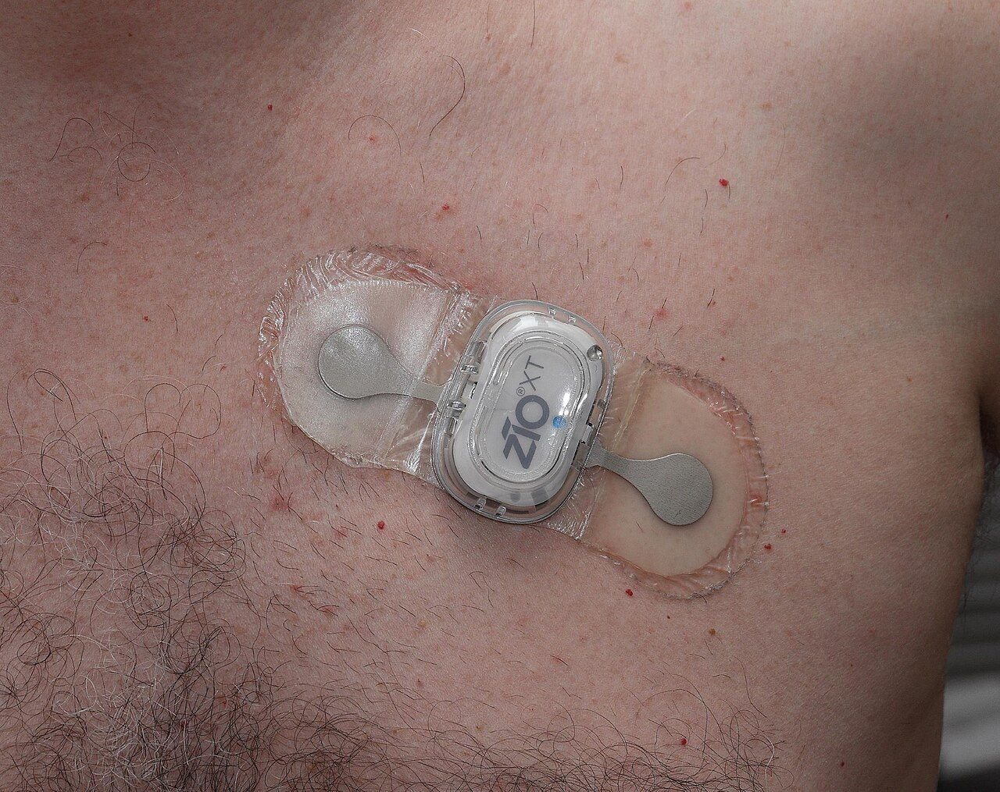
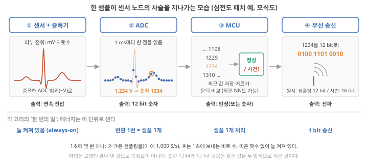
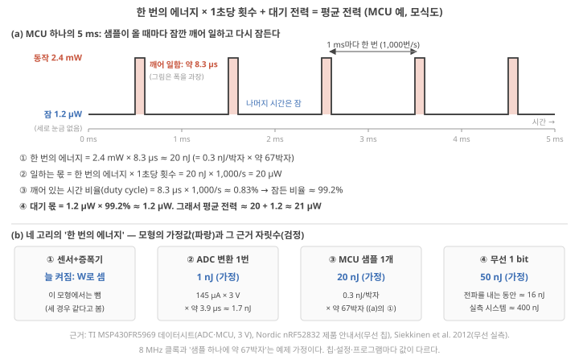
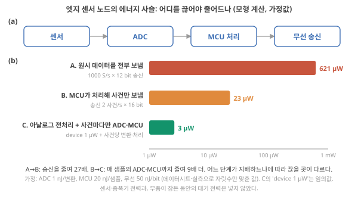
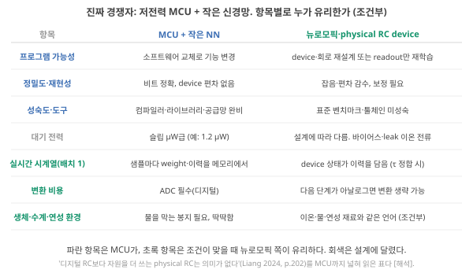
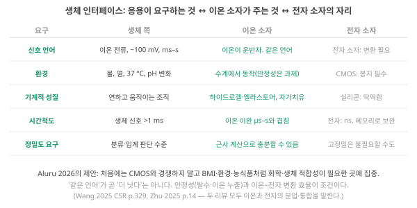
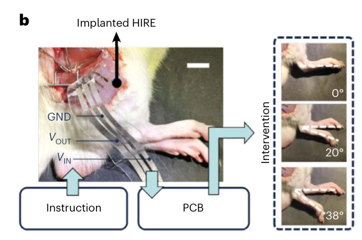
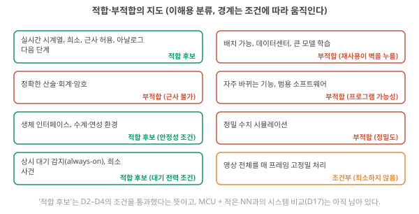

D5. 뉴로모픽은 어떤 문제에 적합하고 어떤 문제에는 부적합한가?
Phase 1 · 왜 뉴로모픽 컴퓨팅인가 · 10월 28일 (수)
답에 들어가야 할 것 — edge, in-sensor, always-on, bio-interface. 진짜 경쟁자는 저전력 MCU + 작은 NN이라는 점
기본 경로: ① 사전 테스트(권장) → ② 학습자료(구간마다 잠깐 점검까지) → ③ 백지 회상 → ④ 가르치듯 내 답. ⓪·⑤와 접힌 '심화'·'추가 연습'은 선택입니다. 한 번에 끝낼 필요 없이 구간 단위로 나눠 읽어도 되고, 다시 열면 '지난번 읽던 곳' 링크가 뜹니다.
① 사전 테스트와 먼저 만들어 보기
아직 배우지 않은 내용을 먼저 풀어 봅니다. 많이 틀리는 것이 정상이고, 그게 목적입니다. 먼저 답해 본 문제는 읽을 때 눈에 들어오고 더 오래 남습니다. 문제마다 정답만 보이고, 이유는 학습자료와 ⑤ 다시 풀기에서 봅니다. 다 풀면 학습자료가 열립니다. 건너뛰려면 학습자료 위의 '그냥 읽기'를 누르세요(권장 단계일 뿐 필수는 아닙니다).
② 학습자료
오늘의 연구 질문 — 내 이온 소자가 들어갈 응용(예: 가슴에 붙이는 심전도 패치)은 뉴로모픽에 맞는 문제인가? 맞는다면, 그 자리에 이미 들어가는 저전력 마이크로컨트롤러 + 작은 신경망보다 시스템 전체로 나은지를 어떤 순서와 어떤 숫자로 따지나?
필요한 개념 (★ = 오늘 처음)
- 배치·칩 안 메모리(D2), 사건 구동·대기 전력·시간상수 τ(D3), ADC·주변회로(D4) — 1구간 첫머리에서 한 줄씩 다시 말합니다
- ★ 센서 노드의 네 고리: 센서·증폭기, ADC(샘플링률), 마이크로컨트롤러(MCU), 무선 (2구간)
- ★ 한 번의 에너지 × 1초당 횟수 = 평균 전력, 깨어 있는 비율(duty cycle), 늘 켜 둠(always-on) (2구간)
- ★ 기준선(baseline)과 시스템 경계 (2·3구간)
- ★ bio-interface와 그 두 조건(안정성, 이온–전자 변환) (4구간)
끝나면 내 말로 설명할 수 있어야 하는 것
- 새 응용 하나(예: 땀 속 염분 감시 패치)를 그림 1의 사다리에 올려, 첫 "아니오" 또는 "모름"이 어느 질문에서 나오는지와 그 이유를 말할 수 있다.
- 그림 4의 A → B → C에서 어느 고리가 줄었는지 짚고, 숫자 하나를 바꾼 새 조건(예: 사건이 초당 20번)에서 평균 전력을 다시 계산할 수 있다.
- "전력 99.9% 절감" 같은 논문 문장을 보면 기준선이 무엇이고 시스템 경계에 무엇이 들어갔는지 물을 수 있다.
나중에 쓰이는 곳 — D6(기준선의 종류), D13(τ와 신호 시간척도의 정합), D16(기준선 표의 'MCU + 작은 신경망'), D17(판단 한 번당 시스템 에너지: 오늘의 평균 전력 모형을 그대로 씀), D27(bio-interface). 이온 소자 판단으로는 "내 소자 전처리가 ADC·MCU를 사건당 몇 번 깨우나", "소자의 대기 이온 전류가 MCU의 잠든 전력(µW 자릿수)보다 작나"를 묻는 데 쓰입니다.
D2에서 "기존 컴퓨터가 특히 불리한 계산"의 조건을, D3에서 뇌의 원리가 비용을 줄이는 조건을, D4에서 소자·회로가 갖춰야 할 조건을 봤습니다. 오늘은 그 조건들을 응용 쪽에서 읽습니다. 어떤 문제가 그 조건을 만족하고, 어떤 문제는 만족하지 못하는가. 그리고 조건을 만족하는 문제에서도 뉴로모픽의 진짜 경쟁자는 데이터센터의 큰 칩이 아니라 센서 옆에 실제로 들어가는 작은 컴퓨터(마이크로컨트롤러)에 올린 작은 신경망이라는 점을 짚습니다. 오늘 내내 D2 장면 2의 심전도 패치 하나를 예제로 씁니다. 네 개의 학습 구간입니다.
- "적합한 문제"를 가르는 질문은 무엇이고, 어떤 순서로 묻나? (심전도 패치를 사다리에 올려 보기)
- 센서 노드는 어떤 고리로 이뤄지고, 각 고리의 에너지를 어떻게 세나? edge, in-sensor, always-on은 그 사슬의 어디를 줄이나?
- 진짜 경쟁자(MCU + 작은 신경망)는 같은 일을 얼마의 전력으로 하고, 항목별로 누가 유리한가?
- bio-interface는 왜 따로 다루고, 어떤 조건이 붙나? 그리고 부적합한 문제는 무엇인가?
학습 구간 1. 적합성을 가르는 질문 사다리
D2–D4에서 모은 조건을 여섯 개의 질문으로 순서 있게 세우고, 내 응용을 그 사다리에 올려 첫 "아니오"가 어디서 나오는지 찾을 수 있게 된다.
직관. "뉴로모픽은 어디에 좋은가"를 한 문장으로 답하면 틀립니다. 대신 지난 사흘의 조건을 질문 여섯 개로 세우고, 위에서부터 차례로 묻습니다. 앞 질문에 "아니오"면 그 아래는 볼 필요가 없습니다. 질문마다 앞날의 말이 하나씩 들어가므로, 그 말들을 먼저 한 줄씩 꺼내 놓습니다.
사다리를 읽기 전에: 앞날에서 가져오는 말 여섯 묶음
- 가중치·배치·칩 안 메모리 (D2). 신경망 한 층은 입력 숫자마다 가중치(입력마다 붙은 '얼마나 중요하게 볼지'라는 숫자, D2 기초)를 곱해 더합니다. 가중치가 칩 밖 메모리(DRAM)에 있으면 그것을 연산기까지 가져오는 데 계산보다 큰 에너지·시간이 들 수 있고, 연산기가 기다리는 상황을 memory wall이라 불렀습니다. 배치(batch)는 같은 가중치로 함께 처리하는 입력 벡터(샘플)의 수입니다. 여러 입력을 모으면 한 번 가져온 가중치를 그 수만큼 재사용합니다(D2 5-2). 다만 모델이 작아 가중치가 칩 안 메모리에 다 들어가면, 배치가 1이어도 판단마다 칩 밖에서 가져올 일이 없습니다(D2 5-5 디지털 기준선).
- 사건·희소성·대기 전력 (D3). 사건(event)은 처리할 변화(예: 입력이 정해 둔 폭 이상 바뀜)이고, 사건 구동은 사건이 올 때만 계산하는 방식입니다(D3 기초 4). 희소하다는 것은 대부분의 시간·채널이 조용하고 적은 일부만 활동한다는 뜻입니다(D3 기초 5). 아무 일이 없어도 나가는 전력이 대기 전력(standby power)입니다. D3 4-2의 식 \(P \approx P_{\text{static}} + \alpha_{\text{unit}} N f E_{\text{unit}}\)에서 유닛 활동률 \(\alpha_{\text{unit}}\)을 아무리 낮춰도 대기 전력 \(P_{\text{static}}\)이 바닥으로 남습니다(D3 4-2).
- 아날로그·편차·잡음 (D3). 아날로그는 값을 전압·전도도 같은 연속량 그대로 다루는 방식이고(D3 기초 1), 그 값은 소자마다 조금씩 다르고(편차) 읽을 때마다 흔들립니다(잡음).
- 시간상수 \(\tau\) (D3). 소자의 상태가 변했다가 돌아오는 데 걸리는 시간의 척도입니다. 신호에서 뜻있는 변화가 일어나는 간격(신호의 시간척도)과 비슷해야 과거 입력의 흔적을 상태에 쓸모 있게 남깁니다(D3 5-2).
- ADC·주변회로 (D4). ADC는 전압을 가장 가까운 단계의 숫자로 바꾸는 회로이고(D4 기초 5), 주변회로는 소자 배열 바깥에서 전압을 만들고 전류를 숫자로 바꾸는 변환기·증폭기 같은 회로입니다(D4 6구간).
- RC, 물리 RC, 디지털 RC (D1). reservoir computing(RC)은 입력에 따라 시간적으로 변하는 계의 상태를 읽어, 간단한 곱해서 더하기(readout)로 답을 내는 방식입니다. 그 계가 실제 소자면 물리 RC, 같은 계산을 숫자로 흉내 낸 프로그램이면 소프트웨어(디지털) RC입니다(D1 2구간 (라)).
여섯째 질문에 나오는 마이크로컨트롤러(microcontroller, MCU)는 센서 옆에 붙이는 작은 칩으로, 연산기와 작은 메모리를 칩 하나에 담은 것입니다(D2 5-5에서 한 줄로 봤고, 2구간 기초 1에서 생김새와 전력을 자세히 봅니다).
무엇을 볼지. 그림 1은 질문 여섯 개를 위에서 아래로 놓고, 각 질문의 오른쪽에 "아니오"일 때 무엇이 문제인지와 그 이유를 배운 날을 적었습니다. 초록 1–5는 D2–D4의 조건, 주황 6은 오늘 새로 묻는 질문입니다.

그림의 번호를 따라 여섯 질문을 폴더 원문의 근거와 함께 적습니다.
- 입력이 한 번에 하나씩, 실시간으로 오나? 입력을 모아 둘 수 있는 일(예: 사진 수백만 장 분류)이면 배치로 가중치를 재사용해 보통 컴퓨터가 유리합니다. 반대로 센서 신호처럼 샘플이 시간 순서로 오고 정해진 시간 안에 답해야 하는 일은 많이 모아 기다릴 수 없습니다. 이 '예'가 뜻하는 것은 "배치로 이득을 보기 어렵다"까지입니다. 가중치가 칩 안에 다 들어가는 작은 모델이면 보통 컴퓨터도 배치 1에서 memory wall에 막히지 않으므로, 데이터 이동이 실제 병목인지는 질문 6에서 숫자로 따집니다. Roadmap이 "마이크로와트로 동작하는 엣지 센서의 희소한 로컬 데이터 스트림"과 "대규모 클라우드 데이터센터"를 양 끝으로 둔 것이 이 구분입니다. Roadmap 2026, p.8103
- 입력이 희소하고 대기 전력을 작게 둘 수 있나? 사건이 드물면 계산 몫의 전력은 거의 사라지고 대기 전력이 남습니다(위 D3 식). 그래서 '희소한가'와 '대기 전력이 작은가'를 함께 묻습니다. 입력이 희소하지 않으면 사건 구동의 이득이 작습니다.
- 과제가 근사·편차·잡음을 견디나? 1% 남짓 틀려도 '정상/이상' 판정이 같은 과제면 문제가 없습니다. 정확한 답이 필요하면 소자마다 값을 재서 맞춰 주는 보정, 여러 번 읽어 평균 내기, 더 세밀한 ADC가 필요해지고, 이 변환·보정 비용이 아날로그로 아낀 에너지를 먹습니다(D4 6구간). 같은 구성이면 소프트웨어 RC가 대개 더 정확하다는 Liang의 관찰 Liang 2024, p.201도 같은 방향입니다. 소자로 하면 정확도가 떨어지기 쉬우니, 근사를 견디는 과제여야 이득이 남습니다.
- 소자의 \(\tau\)가 신호의 시간척도와 겹치나? D3 5-2의 예로 다시 보면, 심전도 박동 간격은 약 1 s입니다. \(\tau\)가 1 ns인 전자 소자는 다음 박동이 오기 전에 앞 박동의 흔적을 사실상 다 잊고(망각), 반대로 10⁻⁷ s마다 변하는 초음파 신호에 \(\tau\)가 ms–s인 이온 소자를 쓰면 신호가 지나간 뒤에야 반응합니다(지연). \(\tau\)가 박동 간격과 비슷할 때(예: 0.5 s) 한두 박동의 흔적이 상태에 남아 시간 정보를 담습니다. Liang 2024, p.198
- 다음 단계가 아날로그이거나 변환이 드문가? 소자의 출력(전류)을 받아 쓰는 다음 부품이 디지털 칩이면, 읽을 때마다 ADC로 숫자를 만들어야 합니다. 이런 주변회로가 시스템 전력의 최대 70%까지 차지할 수 있습니다. Roadmap 2026, p.8130
- 저전력 마이크로컨트롤러 + 작은 신경망보다 시스템 전체로 나은가? 이것이 오늘 2·3구간에서 숫자로 따질 질문입니다. Liang의 한 문장이 이 질문의 뼈대입니다. "디지털 RC보다 자원을 더 쓰는 물리 RC는 의미가 없다." Liang 2024, p.202 Liang의 비교 대상은 디지털 RC이고, 그것을 "MCU + 작은 신경망"으로 넓힌 것은 이 자료의 해석입니다. 해석 이렇게 "소자 대신 무엇을 썼다면 얼마나 됐을까"를 재는 비교 상대를 기준선(baseline)이라 부릅니다. 기준선에는 여러 종류가 있고(2-4, D6), 오늘 3구간의 기준선은 MCU + 작은 신경망입니다.
여기까지: 그림 1의 여섯 질문을 순서대로 말하고, 각 질문에 "아니오"면 무엇이 문제인지(배치 재사용, 대기 전력, 보정 비용, 망각·지연, 변환 비용, 더 싼 디지털 경쟁자)를 짚을 수 있다. 다음: 심전도 패치 하나를 사다리에 올려 본다.
작은 예: 심전도 패치를 사다리에 올리기. D2 장면 2의 패치를 그대로 씁니다. 가슴에 붙인 전극 두 개로 심장의 전기 신호를 읽고, 박동마다 정상/이상을 표시하고, 이상이 이어지면 수 초 안에 경고하며, 전지 하나로 며칠을 버텨야 합니다(장면 속 숫자는 교육용 가정).
- 실시간? 예(조건부). 값이 시간 순서로 오고 수 초 안에 경고해야 하므로 수십 초씩 모을 수는 없습니다. 수 초 분량은 모아 둘 수 있습니다(D2 장면 2의 ⑤). 그리고 가중치 수백–수천 개짜리 작은 모델이면 MCU의 칩 안 메모리에 들어가므로, 이 '예'가 곧 "디지털이 memory wall에 막힌다"는 뜻은 아닙니다.
- 희소·대기 전력? 원시 전압은 매 샘플 값이 있으므로 그 자체로는 희소하지 않습니다. 드문 것은 '이상 박동'이라는 사건입니다. 그래서 질문은 "사건을 골라내는 앞단을 얼마나 작은 대기 전력으로 늘 켜 둘 수 있나"가 되고, 이것은 2구간에서 숫자로 셉니다.
- 근사? 예(조건부). 정상/이상 분류이므로, 미리 정한 놓침·오경보 비율 안에 들면 근사를 견딥니다.
- \(\tau\) 정합? 박동 간격 약 1 s에 맞는 \(\tau\)(예: 0.5 s)를 가진 소자면 예입니다. 내 소자의 \(\tau\)가 ms 자릿수면 아니오입니다. 소자를 재야 답할 수 있습니다.
- 다음 단계? 패치 안에서 결과를 저장하거나 보내는 부품이 디지털 MCU라면 ADC가 필요합니다. '예'가 되려면 변환이 매 샘플이 아니라 사건 때만 일어나도록 설계해야 합니다(2구간의 경우 C).
- MCU + 작은 NN보다? 모름. 2구간에서 센서 노드의 전력을, 3구간에서 MCU 쪽 전력을 세어야 처음으로 비교할 수 있습니다.
이 예에서 첫 "모름"은 질문 2(앞단의 대기 전력)이고, 질문 4는 소자 측정이 있어야 답이 납니다. 사다리는 이렇게 다음에 무엇을 재거나 계산해야 하는지를 알려 줍니다.
적용 조건. 이 사다리는 이해를 위한 순서이지 공식이 아닙니다. 질문 2의 대기 전력과 질문 5의 다음 단계(예: 출력층까지 아날로그로 만들기)는 회로 설계로 바꿀 수 있는 부분입니다. 질문 2의 입력 희소성, 질문 3의 근사 허용 여부, 질문 4의 신호 시간척도는 과제가 정합니다. 소자의 \(\tau\)는 재료로 어느 정도 조절할 수 있지만, 맞춰야 할 목표(신호의 시간척도)는 과제가 줍니다. 그리고 Kudithipudi가 뉴로모픽 설계를 "흔히 크기·무게·전력 제약이 있는 응용"을 위한 것으로 소개한 것 Kudithipudi 2025, p.801은 질문 1–2를 응용 쪽에서 쓴 말입니다.
내가 생각하는 응용 하나를 정해 사다리를 타 보세요(예: 피부에 붙인 압력 센서로 걸음 패턴 분류). 질문 1–5 중 "아니오" 또는 "모름"이 처음 나오는 자리는 어디인가요? 그 자리가 내 응용의 첫 병목입니다.
- 적합성은 한 문장이 아니라 질문 여섯 개의 순서다: 실시간으로 하나씩(배치로 이득을 보기 어려움) → 희소·낮은 대기 전력 → 근사 허용 → \(\tau\) 정합 → 아날로그 다음 단계 → MCU+작은 NN보다 나은가 [해석, D2–D4 종합].
- 질문 1의 '예'는 "배치로 이득을 보기 어렵다"까지다. 가중치가 칩 안에 들어가는 작은 모델이면 디지털도 배치 1에서 memory wall에 막히지 않으므로, 이동이 실제 병목인지는 질문 6에서 따진다.
- 심전도 패치를 올리면 첫 "모름"은 질문 2(사건을 골라내는 앞단의 대기 전력)이고, 질문 4는 소자의 \(\tau\)를 재야 답이 난다.
- 대기 전력(2)·다음 단계(5)는 설계로 바꿀 수 있고, 입력 희소성(2)·근사 허용(3)·신호 시간척도(4)는 과제가 정한다(소자 \(\tau\)는 그 목표에 맞춰 재료로 조절).
- "디지털 RC보다 자원을 더 쓰는 물리 RC는 의미가 없다" Liang 2024, p.202가 여섯째 질문의 근거다.
학습 구간 2. edge, in-sensor, always-on: 에너지 사슬의 어디를 끊나
센서 노드가 센서→변환→처리→송신의 사슬로 에너지를 쓴다는 것을 알고, 한 번의 에너지와 1초당 횟수로 평균 전력을 계산해, 엣지 처리·in-sensor 처리·상시 대기가 각각 그 사슬의 어느 고리를 줄이는지 숫자 예로 말할 수 있게 된다.
이 구간은 네 걸음입니다. 2-1에서 사슬의 네 고리가 신호를 무엇으로 바꾸는지 보고, 2-2에서 각 고리의 에너지를 세는 방법(평균 전력 모형)을 MCU 하나로 계산해 본 뒤, 2-3에서 그 모형으로 세 가지 설계를 비교하고, 2-4에서 폴더 논문의 숫자를 그 눈으로 읽습니다.
2-1. 센서 노드의 네 고리: 신호가 무엇으로 바뀌나
기초 1: 센서 노드와 마이크로컨트롤러(MCU)
왜 필요한가. "엣지에서 뉴로모픽이 유리하다"는 말의 엣지가 무엇인지, 그 자리에 지금 무엇이 들어 있는지 알아야 경쟁자를 지목할 수 있습니다.
무엇인가. 가슴에 붙이는 심전도 패치, 공장 기계에 붙은 진동 센서, 농장의 토양 습도 센서처럼 데이터가 생기는 자리에 붙어 있는 작은 장치를 센서 노드라고 하고, 그 자리 전체를 엣지(edge, 가장자리)라고 부릅니다. 반대말은 클라우드(데이터를 통신으로 보내 데이터센터에서 처리). 센서 노드 안에는 보통 네 부품이 있습니다.

무엇을 볼지. 그림 2는 심전도 패치에서 샘플 하나가 네 고리를 차례로 지나며 무엇으로 바뀌는지 보여 줍니다. 위의 파란 이름표가 고리, 가운데 칸이 그 고리 안에서 일어나는 일, 아래 굵은 글씨가 그 고리의 출력입니다. 맨 아랫줄은 각 고리의 '한 번의 일'을 무엇으로 세는지인데, 이것은 2-2에서 에너지를 셀 때 씁니다.

그림의 번호를 따라. 각 단계를 눌러 하나씩 봅니다.
① 센서(+ 증폭기). 압력·빛·전위 같은 물리량을 전압이나 전류로 바꾼다. 출력은 연속량(아날로그, D3 기초 1). 심전도 패치라면 피부에 닿은 두 전극 사이의 전압 차가 센서 출력인데, 크기가 mV 자릿수라 미확인 교재의 일반값, 원전 대조 안 함 그대로는 ADC의 한 눈금보다 작거나 비슷하다. 그래서 보통 센서 바로 뒤에 증폭기(작은 전압을 같은 모양 그대로 크게 키우는 회로)와 필터(필요 없는 떨림을 거르는 회로)를 둬 V 자릿수로 키운다. 이 앞단은 신호를 놓치지 않으려고 늘 켜져 있다. 그래서 이 고리의 에너지는 '몇 번'이 아니라 '켜져 있는 동안의 전력 [W]'으로 센다(그림 2 아랫줄).
② ADC(아날로그–디지털 변환기). D4 복습: ADC는 전압을 받아 가장 가까운 단계의 숫자로 바꾸는 회로다(D4 기초 5). 센서 노드의 ADC는 이 일을 1초에 정해진 횟수만큼 되풀이한다. 이 횟수가 샘플링률(sampling rate, 단위 S/s = 1초당 샘플 수)이고, 한 번 읽어 얻은 숫자 하나가 샘플(sample)이다. 변환 1번이 곧 샘플 1개다. 심전도 기록에서 흔히 쓰는 신호 대역은 약 0.05–150 Hz(1초에 150번 오르내리는 떨림까지)이고 미확인 AHA/ACC/HRS 권고(Kligfield 2007, Circulation 115, 1306)를 요약한 2차 자료로만 확인, 원문 미대조, 가장 빠른 오르내림 한 번에 점이 둘 넘게 찍혀야 모양을 놓치지 않으므로 1초에 수백 번 이상 읽는다. 오늘 예제는 1,000 S/s, 즉 1 ms마다 한 번으로 둔다(가정). D2 장면 2는 4 ms 간격(250 S/s)을 골랐는데, 둘 다 교육용 가정이고, 150 Hz까지의 모양을 담으려면 더 촘촘한 쪽이 맞다. 12 bit ADC는 입력 범위를 2¹² = 4,096단계로 나눈다. 범위가 0–4.095 V라면 한 단계가 1 mV이므로 1.234 V는 숫자 1234가 되고, 이진수로는 0100 1101 0010, 열두 자리다.
③ 마이크로컨트롤러(MCU). 손톱만 한 칩 하나에 작은 계산기(프로세서), 작은 기억장치, ADC, 통신 회로를 모두 넣은 범용 제어기. 숫자를 받아 프로그램대로 처리한다. 심전도 예라면 샘플이 올 때마다 최근 값 몇 개를 기억 칸에 저장하고, 필요 없는 떨림을 거르고, 문턱과 비교해 '사건(예: 이상 박동 후보)'인지 판정한다. 요즘 MCU는 작은 신경망(D3 기초 7의 '입력 × 가중치 더하기'를 몇 층)도 돌릴 수 있다. 학습이 끝난 신경망에 새 입력을 넣어 답을 내는 일을 추론(inference)이라 한다(D1 2구간 (다)). 할 일이 없을 때 MCU는 대부분의 회로를 끄고 잠든다(sleep). 그래서 MCU의 전력은 깨어 일할 때(mW 자릿수)와 잠들었을 때(µW 자릿수) 두 가지로 적는다. 숫자는 2-2에서 본다.
④ 무선 송신. 처리 결과(또는 원시 데이터)를 전파로 보낸다. 보내는 비트(D2 기초: 0 또는 1 하나를 적는 단위) 수에 비례해 에너지가 들고, 많은 노드에서 가장 비싼 고리로 꼽힌다 [미확인: 노드 설계마다 다름]. 왜 비싼가: 몇 m–수십 m 떨어진 수신기까지 닿을 만큼의 전파(전자기파)를 안테나로 내보내야 하고, 데이터 앞뒤에 붙는 주소·확인 신호 같은 덧붙는 비트, 무선 회로를 켜고 주파수를 맞추는 준비 시간도 함께 든다 해석. 원시 데이터를 다 보내면 1초에 1,000 샘플 × 12 bit = 12,000 bit, '이상 박동' 같은 사건만 보내면 사건 하나에 16 bit(오늘의 가정) 정도다.
연결. 뉴로모픽 소자가 들어간다면 ②와 ③ 사이(전처리) 또는 ①과 ②를 합친 자리(센서가 곧 처리기)입니다. Singh 2026은 기존 엣지 하드웨어가 센서 → ADC → 메모리 → 프로세서로 데이터를 옮기는 데 에너지·시간을 낭비하며, 그래서 near-sensor·in-sensor computing(센서 곁이나 센서 안에서 처리하는 방식, 2-3에서 다시 봄)이 나왔다고 씁니다. Singh 2026, p.1
2-2. 한 번의 에너지 × 1초당 횟수: 평균 전력을 세는 법
왜 필요한가. 전지로 며칠을 버텨야 하는 패치에서 묻는 것은 "평균적으로 1초에 몇 J을 쓰나", 즉 평균 전력입니다. 그런데 부품의 사양은 "변환 한 번에 몇 nJ", "1 bit에 몇 nJ"처럼 한 번의 에너지로 주어지거나, "깨어 있을 때 몇 mW, 잠들었을 때 몇 µW"처럼 상태별 전력으로 주어집니다. 둘을 이어 주는 규칙 하나만 있으면 됩니다. 에너지 [J]와 전력 [W = J/s]의 구분은 D3 기초: 전력과 에너지에서 봤습니다.
규칙. 한 번의 에너지 [J/번] × 1초에 하는 횟수 [번/s] = [J/s] = 평균 전력 [W]. 예: 1,000번/s × 1 nJ = 1,000 × 10⁻⁹ J/s = 10⁻⁶ W = 1 µW.
무엇을 볼지. 그림 3a는 MCU 하나가 5 ms 동안 무엇을 하는지 시간축에 그린 것입니다. 샘플이 1 ms마다 오면 MCU는 깨어나(위로 솟은 칸) 그 샘플을 처리하고 다시 잠듭니다(바닥). 솟은 칸 하나의 넓이가 한 번의 에너지, 1초에 솟는 횟수가 횟수, 바닥의 높이가 대기 전력입니다. 아래 ①–④의 계산을 그림과 함께 따라가세요. 그림 3b는 같은 방식으로 네 고리 각각의 '한 번의 에너지'를 모은 것입니다.

그림 3a를 따라 계산하기. 숫자는 저전력 MCU 하나(TI MSP430FR5969)의 데이터시트 값입니다. 동작 전류 약 100 µA/MHz, 잠든 상태(LPM3) 0.4 µA, 전원 1.8–3.6 V 확인 TI MSP430FR5969-SP 데이터시트 특징 목록. 칩마다 값은 다릅니다.
준비: 상태별 전력. 3 V·8 MHz(1초에 800만 박자, 박자는 D1 기초: 클록의 한 똑딱)로 돌리면 100 µA/MHz × 8 MHz = 0.8 mA, × 3 V ≈ 2.4 mW(깨어 있을 때). 잠들면 0.4 µA × 3 V ≈ 1.2 µW [계산]. 박자 하나의 에너지는 100 µA/MHz × 3 V를 1초당 박자 수로 나눈 0.3 mW ÷ 10⁶/s = 0.3 nJ이다 [계산].
① 한 번의 에너지. 샘플 하나를 거르고 문턱과 비교하는 데 약 67박자가 든다고 두자(가정). 67박자 ÷ 8 MHz ≈ 8.3 µs 동안 깨어 있으므로, 2.4 mW × 8.3 µs ≈ 20 nJ. 같은 값을 박자로 세면 0.3 nJ × 67 ≈ 20 nJ이다.
② 일하는 몫. 샘플이 1초에 1,000번 오므로 20 nJ × 1,000/s = 20,000 nJ/s = 20 µW.
③ 깨어 있는 비율. 1초 가운데 깨어 있는 시간은 8.3 µs × 1,000 = 8.3 ms, 즉 약 0.83%다. 이 비율을 듀티 사이클(duty cycle)이라 한다. 나머지 약 99.2%는 잠들어 있다.
④ 대기 몫과 합계. 잠든 동안의 몫은 1.2 µW × 99.2% ≈ 1.2 µW. 평균 전력 ≈ 20 + 1.2 ≈ 21 µW. 일하는 몫은 횟수에 비례하고, 대기 몫은 횟수와 거의 무관하게 바닥으로 남는다. 샘플이 드물어 일하는 몫이 1 µW 아래로 내려가면, 평균 전력은 대기 몫이 정한다.
새 이름 둘. 잠든 상태처럼 아무 일이 없어도 나가는 전력이 대기 전력(standby power)이고, D3 식의 \(P_{\text{static}}\)에 해당합니다. 그리고 그림 2의 ① 센서·증폭기처럼 신호를 놓치지 않으려고 잠들지 않고 늘 켜 두는 동작을 always-on(상시 대기)이라 부릅니다. always-on 부분의 전력은 횟수와 상관없이 1초 내내 나가므로, '한 번의 에너지 × 횟수'가 아니라 그 전력 [W]을 그대로 더합니다.
네 고리의 한 번의 에너지(그림 3b). 같은 방식으로 다른 고리의 자릿수를 잡습니다.
- ② ADC 변환 1번. 변환 한 번의 에너지 = 동작 중 전력 × 변환에 걸린 시간. 같은 MCU 안의 12 bit ADC는 3.0 V에서 동작 전류 145 µA(전형값)이고, 변환에 내부 시계 14박자(약 2.9 µs)와 입력 전압을 붙잡아 두는 표본 시간 약 1 µs가 든다 확인 데이터시트 SLAS704G, Table 5-22·5-23. 0.145 mA × 3 V × 약 3.9 µs ≈ 1.7 nJ [계산: 내부 기준전압 회로의 전류는 넣지 않음]. 모형에서는 1 nJ로 둡니다.
- ③ MCU 샘플 1개. 위의 20 nJ(0.3 nJ/박자 × 약 67박자)는 거르기·비교 정도의 간단한 처리에 해당합니다 해석. 신경망을 돌리면 박자 수가 훨씬 늘어납니다(3구간). 모형에서는 20 nJ.
- ④ 무선 1 bit. 두 가지 자릿수가 있습니다. 칩 하나가 전파를 내는 순간만 보면, Nordic nRF52832(저전력 블루투스 칩)는 3 V에서 0 dBm(dBm은 1 mW를 기준으로 한 로그 단위, 0 dBm = 1 mW) 송신 중 5.3 mA를 쓰고 1초에 100만 bit(1 Mbps)를 전파에 싣습니다 확인 제품 안내서 v2.4. 5.3 mA × 3 V ÷ 10⁶ bit/s ≈ 16 nJ/bit [계산]. 한편 저전력 무선 두 종류를 실제 칩으로 잰 연구는 IEEE 802.15.4(ZigBee 계열)가 연속 전송에서 보낸 데이터 1 J당 최대 약 300 KB이고, 연결 한 번 단위로 비교하면 Bluetooth Low Energy가 802.15.4보다 약 2.5배 낫다고 보고합니다 확인 Siekkinen et al. 2012, IEEE WCNCW, pp.232–237. 300 KB/J를 비트당으로 바꾸면 1 J ÷ (300,000 × 8 bit) ≈ 0.4 µJ/bit = 약 400 nJ/bit [계산]. 16 nJ/bit는 전파를 내는 순간만 센 값이고, 400 nJ/bit는 준비·덧붙는 비트·연결 유지까지 들어간 실측이라 더 큽니다. 모형에서는 그 사이의 50 nJ/bit로 둡니다.
- ① 센서·증폭기. always-on이라 W로 셉니다. 2-3의 세 경우에 똑같이 들어가므로 비교 모형에서는 뺍니다. 실제 크기는 D17에서 상용 칩 값으로 다룹니다.
식으로 모으면. 기호를 먼저 정합니다. 샘플링률 \(f_s\) [S/s], 샘플당 비트 수 \(b\) [bit], 변환 한 번의 에너지 \(E_{ADC}\) [J], 샘플 하나를 처리하는 에너지 \(E_{MCU}\) [J], 1 bit를 보내는 에너지 \(E_{radio}\) [J/bit], 1초에 보내는 비트 수 \(R\) [bit/s], 늘 켜진 부분과 잠든 부품의 전력을 모은 \(P_{\text{standby}}\) [W].
\[P_{\text{avg}} \approx f_s E_{ADC} + f_s E_{MCU} + R\,E_{radio} + P_{\text{standby}}\]
(\(P_{\text{avg}}\)는 평균 전력.) 앞의 세 항은 모두 "1초당 횟수 × 한 번의 에너지"이고 단위는 [번/s] × [J] = [W]입니다. 원시 데이터를 다 보내면 \(R = f_s \times b\)이고, 사건만 보내면 \(R\) = 초당 사건 수 × 사건당 비트 수입니다. 마지막 항은 횟수와 무관하게 늘 나가는 몫입니다.
여기까지: 그림 3a를 따라 "2.4 mW × 8.3 µs ≈ 20 nJ → × 1,000/s = 20 µW, 듀티 사이클 0.83%, 잠든 몫 1.2 µW, 합계 약 21 µW"를 계산하고, 한 번의 에너지·횟수·대기 전력·always-on이 식의 어느 항인지 말할 수 있다. 다음: 이 식으로 세 가지 설계를 비교한다.
2-3. 세 가지 설계 비교: 사슬의 어디를 끊나
이름 둘. 센서 노드의 처리를 어디서 하느냐에 따라 두 말이 쓰입니다. 엣지 컴퓨팅(edge computing)은 데이터를 보내기 전에 노드 안(주로 MCU)에서 처리해 송신(④)을 줄이는 것이고, in-sensor computing은 센서 자체나 바로 옆에서 처리해 ADC·MCU로 가는 데이터(②·③)까지 줄이는 것입니다(센서 바로 옆이면 near-sensor라고도 부릅니다). 어느 고리가 전력을 지배하느냐에 따라 끊을 곳이 다릅니다.
세 가지 설계. 같은 심전도 패치(1,000 S/s × 12 bit, 이상 박동 사건은 초당 2번, 사건 하나에 16 bit라고 가정)를 세 가지로 만듭니다.
- A. 원시 데이터를 전부 보냄(처리는 클라우드에서).
- B. 엣지 처리: MCU가 매 샘플을 처리해 사건만 보냄.
- C. in-sensor(near-sensor) 전처리: 센서 바로 뒤의 아날로그 전처리 소자가 연속 전압을 always-on으로 지켜보다가, 문턱을 넘는 사건이 생길 때만 ADC·MCU에 '깨어나라' 신호를 보냄(그 밖의 시간에 ADC·MCU는 잠듦).
A에서 ADC·MCU·무선 가운데 어느 고리가 평균 전력의 대부분을 차지할까요? 아래 그림을 보기 전에 2-2의 식과 그림 3b의 '한 번의 에너지'(1 nJ, 20 nJ, 50 nJ/bit)만으로 짐작해 보세요.
무엇을 볼지. 그림 4 위의 네 상자는 그림 2의 네 고리이고, 아래 세 막대가 A·B·C의 평균 전력입니다. 가로축은 로그 눈금(한 칸이 10배: 1 µW → 10 µW → 100 µW → 1 mW, D1 기초: 로그 축)이라, 막대 길이 차이 한 칸이 10배 차이입니다. A→B에서 줄어든 고리와 B→C에서 줄어든 고리가 각각 무엇인지 보세요.

그림을 따라 계산하기. 2-2의 식 \(P_{\text{avg}} \approx f_s E_{ADC} + f_s E_{MCU} + R\,E_{radio} + P_{\text{standby}}\)에 넣습니다.
- A. ADC 1,000/s × 1 nJ = 1 µW, MCU 1,000/s × 20 nJ = 20 µW, 송신 1,000 × 12 = 12,000 bit/s × 50 nJ = 600 µW. 송신이 거의 전부라 합계 621 µW.
- B. 송신은 2 × 16 = 32 bit/s × 50 nJ = 1.6 µW로 줄고 ADC·MCU 21 µW가 남아 약 23 µW(A의 약 27분의 1).
- C. 매 샘플의 ADC·MCU가 사라지고 사건 때만 일합니다. 전처리 소자 1 µW(always-on이라 \(P_{\text{standby}}\) 항, 임의 가정) + 사건 2개 × (1 + 20) nJ ≈ 0.04 µW + 송신 1.6 µW ≈ 2.6 µW, 반올림해 3 µW(B의 약 9분의 1).
모형이 넣지 않은 것. 숫자는 자릿수 가정이고, 근거는 그림 3b에 모았습니다. 무선 50 nJ/bit가 실측(약 400 nJ/bit) 쪽에 가까우면 A의 송신 몫은 더 커집니다 [계산]. 그리고 이 모형은 (1) 센서·증폭기 전력(세 경우 같다고 봄)과 (2) 부품이 잠든 동안의 대기 전력을 뺐습니다. (2)를 넣어 봅니다. 그림 3a에서 본 MCU의 잠든 몫 약 1.2 µW를 B와 C 모두에 더하면 B ≈ 24 µW, C ≈ 4 µW가 되어, 차이는 약 9배에서 약 6배로 줄어듭니다 [계산]. C처럼 일을 줄일수록 대기 전력이 바닥을 정한다는 D3 4-2의 교훈이 여기서도 나옵니다.
핵심. 송신이 지배하면 엣지 처리가, 매 샘플의 ADC·MCU가 지배하면 in-sensor 전처리가 효과를 냅니다. 그리고 일하는 몫을 줄일수록 남는 것은 always-on 부분과 잠든 부품의 대기 전력입니다.
always-on을 숫자로. 사건이 아주 드문 노드라면 평균 전력은 거의 대기 전력입니다. 숫자로: 대기 1 µW인 노드에 사건이 하루 100번 오고 사건마다 10 µJ을 쓴다면, 사건 몫은 100 × 10 µJ ÷ 86,400 s ≈ 0.012 µW로 대기 1 µW의 약 1%입니다 [계산, 가정값]. 그래서 이런 노드에서는 사건당 에너지를 더 줄이기보다 대기 전력(\(P_{\text{static}}\))을 줄이는 것이 평균 전력을 정합니다.
여기까지: 그림 4의 A·B·C를 식에 넣어 621·23·3 µW를 다시 계산하고, 어느 고리를 줄였는지와 모형이 뺀 대기 전력을 넣으면 결론이 어떻게 바뀌는지 말할 수 있다. 다음: 같은 눈으로 폴더 논문의 "전력 99.9% 절감"을 읽는다.
2-4. 폴더 논문의 숫자를 사슬의 눈으로 읽기
폴더의 예. Zhong 2022(Nat. Electron.)는 휘발성 memristor(저항이 지나온 전압·전류 이력에 따라 바뀌는 2단자 소자. 휘발성은 그 변화가 시간이 지나면 저절로 풀린다는 뜻, D1 4구간) 24개를 reservoir(입력을 받아 상태로 바꾸는 고정된 부분, Phase 2의 주제)로, 비휘발 memristor 배열을 readout(상태에서 답을 꺼내는 마지막 층)으로 쓴 완전 아날로그 RC 시스템으로 심전도 부정맥 검출(96.6%, 완전 디지털 RC 기준선 98.2%; 기준선은 "소자 대신 무엇을 썼다면 얼마나 됐을까"를 재는 비교 대상)과 3축 가속도 제스처 분류(97.9%)를 했고, 제스처 과제에서 디지털 RC 대비 평균 정확도 손실 1.1%에 전력 99.9% 이상 절감을 주장합니다. Zhong 2022, p.677–678 이 전력은 저자들이 "전력 추정(power estimation)"이라 부른 값이고 방법은 보충자료(SI)에 있습니다. Zhong 2022, p.679 저자들은 두 요인을 듭니다. 완전 아날로그 신호 전달로 ADC 오버헤드(본 계산 외에 덧붙는 변환 비용)를 없앤 것과, 큰 순환 신경망(recurrent neural network: 자기 출력을 다음 시점의 입력으로 다시 받아 과거를 기억하는 신경망. 디지털 RC의 reservoir가 이런 망이다)을 소수의 병렬 소자로 대체한 것. Zhong 2022, p.679 그리고 "극히 낮은 전력과 하드웨어 비용을 요구하는 엣지 컴퓨팅"을 용도로 적습니다. Zhong 2022, p.672

적용 조건. 이 수치를 읽을 때 세 가지를 봅니다. (1) 기준선의 종류. 98.2%와 99.0%는 "완전 디지털 RC"(같은 알고리즘을 숫자 계산으로 돌린 것)이지 "MCU + 작은 신경망"이 아닙니다. 그리고 "소자를 빼고 원시 입력 + readout"이라는 기준선은 본문에 없습니다. 해석 (2) 시스템 경계. 같은 논문의 시스템 구성에는 전원 모듈과 MCU가 들어 있습니다. MCU는 제어 신호를 만들고 데이터 전송을 맡습니다. Zhong 2022, p.674 즉 "완전 아날로그 RC"에도 디지털 제어기가 옆에 있고, 22 µW가 그것을 포함하는지는 폴더에서 확인할 수 없습니다. (3) 과제의 성격. 심전도와 제스처는 모두 실시간 시계열, 배치 1, 분류(근사 허용)입니다. 사다리의 1·3·4를 통과하는 과제를 골랐기 때문에 이득이 난 것이고, 다른 과제에서도 같은 이득이 난다고 볼 근거는 이 논문에 없습니다. 해석
always-on의 다른 길: 전원 없이 늘 켜 두기. 2-3에서 always-on 부분은 대기 전력이 평균 전력을 정한다고 봤습니다. Kim 2026(Nat. Sensors)은 센서와 memristor만으로 "디지털 회로나 외부 전원 없이" 다중 감각 입력의 스파이크 부호화(세기를 짧은 전압 펄스, 즉 스파이크의 시점으로 바꾸기, D3 기초 7)와 비지도 학습(정답을 알려 주지 않고 입력이 함께 오는 규칙성만으로 연결 세기를 바꾸는 학습)을 하는 자가 구동 아날로그 시스템을 초록에서 주장합니다. Kim 2026, p.535 "외부 전원 없이"는 환경 자극이 정보원이자 에너지원이 된다는 뜻입니다(예: 광전지·압전 센서가 만든 전압을 그대로 소자에 건다). Kim 2026, p.536–538 그러니 이 방식은 입력이 있을 때만 동작하고, 학습 규칙도 소자 근처의 신호만으로 돌아가야 합니다. 이것이 사다리의 질문 2와 D3 6구간의 가소성 조건에 해당한다는 것은 해석입니다. 본문은 p.536–538의 몇 문장 외에는 대조하지 않음
- Zhong 2022: 부정맥 96.6% vs 디지털 RC 98.2% Zhong 2022, p.677; 제스처 평균 손실 1.1%, 전력 99.9% 절감(29,400 → 22 µW/제스처, 추정 방법은 SI) Zhong 2022, p.678, Fig. 5g.
- 그림 4의 가정값과 근거(그림 3b): ADC 1 nJ/변환(데이터시트 예 약 1.7 nJ), MCU 20 nJ/샘플(0.3 nJ/박자 × 약 67박자), 무선 50 nJ/bit(칩 송신 중 약 16 nJ/bit, 실측 약 400 nJ/bit) [계산, 근거값의 링크는 2-2].
- Roadmap의 엣지 BIC(생체 모방 컴퓨팅) 예: "Tianmouc" 비전 칩이 최대 10,000 fps(초당 프레임), 동적 범위 130 dB(한 장면에서 함께 담을 수 있는 가장 밝은 빛과 가장 어두운 빛의 비를 로그로 적은 값. 영상 센서에서는 20 × log₁₀(비)로 적으므로 130 dB는 약 300만 배 [계산]), 적응형 대역폭(내보내야 하는 데이터 양) 90% 절감 Roadmap 2026, p.8136. 이것은 비전 칩이지 이온 소자가 아니다.
- edge / 센서 노드 / MCU (복습)
- 데이터가 생기는 자리 / 그 자리의 작은 장치 / 그 안의 범용 제어 칩. 기초 1
- in-sensor computing
- 센서 자체 또는 바로 옆에서 처리를 끝내 ADC·메모리·프로세서로 가는 데이터를 줄이는 방식 Singh 2026, p.1.
- always-on (상시 대기)
- 잠들지 않고 늘 켜 둔 채 입력을 감시하다 사건이 오면 반응. 그 전력은 횟수와 무관하게 나가므로, 사건이 드물면 평균 전력을 정한다. 2-2
- 듀티 사이클 (duty cycle)
- 전체 시간 가운데 깨어 일하는 시간의 비율. 그림 3a의 MCU는 약 0.83%. 2-2
- 기준선 (baseline)
- "소자가 없었다면 얼마나 잘 됐을까"를 재는 비교 대상. 종류가 여럿이다: 같은 알고리즘의 디지털 구현, 원시 입력 + 같은 readout, MCU + 작은 신경망. D6의 주제.
내 소자가 "센서"인 동시에 "전처리기"라면(piezoionic, electrostatic sensor처럼 자극이 곧 이온 분포를 바꾸는 경우), 그림 2의 사슬에서 ADC 앞에 서는 셈입니다. 그때 ADC는 사건당 몇 번 깨어나야 하나요? 내 소자의 출력(전위? 전류?)을 읽는 데 어떤 회로가 필요하고, 그 회로의 대기 전력은 얼마일까요? 모르는 항목을 적습니다.
- 센서 노드 = 센서 → ADC → MCU → 무선. 엣지 처리는 송신을, in-sensor 전처리는 ADC·MCU로 가는 데이터를 줄인다. 어느 고리가 지배하느냐가 효과를 정한다(그림 4: 621 → 23 → 3 µW) [모형: 가정값은 데이터시트·실측으로 자릿수만 맞춤, 센서·대기 전력 제외].
- 한 번의 일에 드는 에너지의 자릿수: ADC 변환 약 1–2 nJ, MCU 박자당 약 0.3 nJ, 무선 1 bit 약 16 nJ(송신 순간)–400 nJ(실측). 평균 전력 = Σ(1초당 횟수 × 한 번의 에너지) + 늘 나가는 대기·always-on 전력. 예: MCU 20 nJ × 1,000/s = 20 µW, 듀티 사이클 0.83%, 잠든 몫 1.2 µW [계산, 데이터시트·실측 기반].
- Zhong 2022는 실시간 시계열·배치 1·분류 과제에서 디지털 RC 대비 1.1% 손실, 전력 99.9% 절감을 주장한다 Zhong 2022, p.678–679. 기준선이 디지털 RC이고, 시스템에 MCU가 있으며, 전력은 추정값이고 그 방법은 SI에 있다 미확인.
- always-on은 사건이 드물면 대기 전력이 곧 평균 전력이다. 자가 구동 시스템(Kim 2026)은 환경 자극을 에너지원으로 쓰므로 입력이 있을 때만 동작한다 해석.
- 쉬어 가기: 다음 구간은 "그 자리에 이미 있는 것"과의 비교다.
학습 구간 3. 진짜 경쟁자: 저전력 MCU + 작은 신경망
뉴로모픽이 적합한 자리에서 비교 대상이 GPU가 아니라 MCU + 작은 신경망임을 알고, 항목별로 누가 유리한지 조건을 붙여 말하며, 공정한 비교의 형식을 적을 수 있게 된다.
직관. 뉴로모픽 논문의 서론은 데이터센터용 그래픽 칩(GPU, D3 기초 3)의 수백 W와 비교하지만, 센서 노드에 GPU를 넣는 사람은 없습니다. 그 자리에 실제로 들어가는 것은 MCU이고, 요즘 MCU는 작은 신경망을 돌릴 수 있습니다(이 분야를 TinyML이라 부릅니다 Warden & Situnayake, TinyML, O'Reilly 2020, ISBN 9781492052043에서 서지만 확인). 그러니 "뉴로모픽 소자가 GPU보다 효율적"은 뉴로모픽의 적합한 자리에서는 의미 없는 비교이고, 물어야 할 것은 "같은 과제를 MCU + 작은 신경망으로 하면 전력·정확도·비용이 얼마인가"입니다. Liang의 "디지털 RC보다 자원을 더 쓰는 물리 RC는 의미가 없다" Liang 2024, p.202는 디지털 RC와의 비교를 요구하는 문장이고, 이 자료는 그 요구를 엣지에 실제로 들어가는 MCU + 작은 신경망까지 넓혀 읽습니다. 해석 Kudithipudi가 보통 컴퓨터의 성능을 "가장 작은 마이크로컨트롤러부터 서버급 프로세서까지" 한 척도로 재듯 뉴로모픽의 규모도 그렇게 재자고 한 것 Kudithipudi 2025, p.802도, 뉴로모픽을 MCU급 장치와 같은 저울에 올릴 수 있다는 뜻으로 읽을 수 있습니다. 해석
MCU에서 작은 신경망이 도는 장면. MCU에는 곱셈기가 하나 또는 몇 개뿐이라, 신경망의 '입력 × 가중치를 더하기'(D2 3구간)를 한 번에 하나씩 차례로 합니다. 곱하고 더하기 한 번(MAC, multiply-accumulate, D2 3-3)마다 기억장치에서 가중치와 입력을 꺼내 곱셈기에 넣고 결과를 누적하는 데 몇–수십 박자가 듭니다. 숫자로 따라가 봅니다. 가중치 1,000개짜리 작은 망이면 MAC 1,000번이고, MAC 하나에 10박자로 잡으면 [가정] 1만 박자입니다. 박자당 0.3 nJ(2-2 그림 3a에서 데이터시트 값으로 계산)이면 추론(학습이 끝난 망으로 새 입력의 답을 내는 일) 한 번에 3 µJ입니다. 2-2와 같은 규칙(한 번의 에너지 × 1초당 횟수)으로, 1초에 한 번 판정하면 평균 3 µW이고, 그 사이에 잠든 동안의 대기 약 1.2 µW가 더해집니다 [계산]. 8 MHz라면 1만 박자는 1.25 ms이므로 듀티 사이클은 약 0.13%입니다 [계산]. 그림 4의 C(약 3 µW)와 같은 자릿수입니다. 그래서 '뉴로모픽 소자는 µW로 동작한다'는 말은 이 숫자와 같은 과제·같은 조건에서 비교해야 뜻이 생깁니다. 해석
가중치는 어디에 있나. 가중치 1,000개를 하나에 1 byte(8 bit)로 두면 1 kB, 4 byte로 두어도 4 kB입니다(D2 기초: 바이트). 2-2의 MCU는 칩 안에 전원이 꺼져도 값이 남는 메모리(FRAM) 64 KB와, 전원이 있는 동안 값을 들고 있는 빠른 작업용 메모리(SRAM) 2 KB를 가지므로 확인 TI MSP430FR5969 제품 페이지, 2026-10-27 열람 이 정도 가중치는 칩 안에 다 들어갑니다. 즉 이 경쟁자는 배치 1이어도 판단마다 칩 밖 메모리에서 가중치를 가져오지 않습니다(D2 5-5). 남는 이동은 칩 안 메모리와 곱셈기 사이의 짧은 이동이고, 그 비용은 위의 '박자당 0.3 nJ'에 이미 들어 있습니다. 뉴로모픽 소자가 '데이터 이동을 줄인다'는 장점을 내세우려면, 이 짧은 이동과 비교해야 합니다. 해석
여기까지: 가중치 1,000개 신경망을 MCU로 돌리면 MAC 1,000번 × 10박자 × 0.3 nJ = 3 µJ/추론, 1초에 한 번이면 약 3 µW + 잠든 몫 1.2 µW라는 것과, 그 가중치가 칩 안에 들어가 배치 1이어도 칩 밖에서 가져오지 않는다는 것을 말할 수 있다. 다음: 숫자 밖의 항목들(프로그램 가능성, 정밀도, 환경)로 비교한다.
무엇을 볼지. 그림 5는 같은 자리에 들어갈 두 후보를 일곱 항목으로 나란히 놓은 표입니다. 왼쪽 항목 이름의 색이 '누가 유리한가'입니다(파랑: MCU, 초록: 조건이 맞을 때 뉴로모픽, 회색: 설계에 달림). 초록 항목마다 괄호 안의 조건을 함께 읽으세요.

항목별로.
- 프로그램 가능성. MCU는 소프트웨어(프로그램)를 바꾸면 기능이 바뀝니다. 물리 RC는 readout만 다시 학습하면 과제를 바꿀 수 있지만(Phase 2), reservoir의 시간척도와 비선형성은 소자에 고정됩니다. 아날로그 회로는 기능을 바꾸려면 회로를 바꿔야 하는 경우가 많습니다(항상은 아닙니다. Liang이 소개한 temporal kernel처럼 소자 안에 조절 손잡이를 둔 설계도 있습니다 Liang 2024, p.196).
- 정밀도·재현성. MCU는 디지털(D3 기초 1)이라 비트 정확이고 소자 편차가 없습니다. 아날로그 쪽은 D4의 모든 오차원을 안고 갑니다.
- 성숙도. MCU는 컴파일러(프로그램을 기계어로 바꾸는 도구)·라이브러리·공급망이 있습니다. 뉴로모픽은 Roadmap이 "성능 지표가 아직 발전 중이고, 방식이 다양해 표준화가 어려우며, 어떤 평가 기준이 적절한지 분야의 합의가 없다"고 쓰는 단계입니다 Roadmap 2026, p.8136.
- 대기 전력. 설계에 달렸습니다. MCU 슬립 모드는 µW급입니다(예: 대기 0.4 µA × 3 V ≈ 1.2 µW, 2-2의 데이터시트 예) 확인. 반면 이온 소자의 "대기"에는 바이어스(동작점을 잡으려고 걸어 두는 전압) 유지나 누설 이온 전류(신호가 없어도 조금씩 새어 흐르는 이온 전류)가 있을 수 있습니다. 해석
- 실시간 시계열. MCU는 '최근 1초'처럼 과거 샘플을 기억 칸에 줄지어 저장해 두고(1,000 S/s면 숫자 1,000개), 새 샘플이 올 때마다 가장 오래된 것을 지우고 새것을 넣은 뒤 가중치와 함께 다시 꺼내 계산합니다(D2의 데이터 이동). 소자가 이력을 상태(예: 서서히 빠지는 이온 농도)에 담으면 그 저장·꺼내기가 줄어듭니다. 조건: \(\tau\) 정합. 다만 12 bit 샘플 1,000개는 2 byte씩 약 2 kB라 위 MCU의 칩 안 메모리에 들어가므로, 줄어드는 것은 칩 안의 짧은 이동이고 그 이득의 크기는 계산해 봐야 합니다. 해석
- 변환 비용. MCU 경로는 ADC가 필수입니다. 아날로그 경로는 다음 단계가 아날로그면 생략할 수 있습니다.
- 생체·수계·연성 환경. 4구간.
공정한 비교의 형식. 같은 과제, 같은 데이터, 같은 정확도 목표에서 시스템 경계를 같게 두고 전력과 지연(입력이 들어와 답이 나오기까지의 시간)을 재는 것입니다. Zhong의 비교는 "디지털 RC(같은 알고리즘의 디지털 구현)"가 기준이라 알고리즘은 같지만, MCU에 최적화된 작은 신경망과 비교한 것은 아닙니다. 그 비교가 없으면 "엣지에 적합"은 아직 가설입니다. 해석 Singh 2026(Adv. Mater. 퍼스펙티브)은 물리 RC 논문에 "같은 입력 부호화·데이터 분할·readout을 쓴 참조 사례(원시 입력 기준선, 기억을 최소화한 정적 소자 기준선)"를 요구하는데 Singh 2026, p.8 Singh 2026, p.20, Table 3, MCU 비교는 그 목록 바깥의, 시스템 수준 비교입니다. D17에서 이 비교의 절차를 다룹니다.
"뉴로모픽 소자는 GPU보다 10⁶배 효율적이다" — 비교 대상이 맞지 않습니다. 뉴로모픽이 적합한 자리(엣지·실시간·희소)에서 경쟁자는 GPU가 아니라 MCU + 작은 신경망이고, 오늘 대조한 폴더 논문 가운데 그 비교를 완전한 형태로 제시한 것은 없습니다. GPU 비교는 데이터센터 과제에서만 뜻이 있는데, 그 과제는 사다리의 첫 질문에서 떨어집니다.
내 응용에서 MCU + 작은 신경망으로 같은 일을 하면 어떻게 될지 구체적으로 상상해 보세요. 샘플링률은? 신경망의 가중치 수는? 그 MCU가 깨어 있는 시간 비율은? 세 질문 중 하나라도 답할 수 있다면 D17의 비교를 시작할 수 있습니다.
- 뉴로모픽의 적합한 자리에서 경쟁자는 GPU가 아니라 MCU + 작은 NN이다 해석. 근거: Liang 2024, p.202 Kudithipudi 2025, p.802.
- MCU가 유리한 항목: 프로그램 가능성, 정밀도·재현성, 성숙도. 조건부로 뉴로모픽이 유리한 항목: 실시간 시계열(\(\tau\) 정합), 변환 생략(아날로그 다음 단계), 생체·수계 환경.
- MCU + 작은 NN도 µW 자릿수다: 가중치 1,000개 망을 1초에 한 번 돌리면 약 3 µW + 대기 약 1.2 µW [계산, 박자 수는 가정]. 가중치 1–4 kB는 칩 안에 들어가므로 배치 1이어도 칩 밖에서 가져오지 않는다.
- 공정한 비교는 같은 과제·데이터·정확도 목표·시스템 경계에서 전력과 지연을 재는 것이다. 폴더에 완전한 예는 없다 → D17.
학습 구간 4. bio-interface, 그리고 부적합한 문제
생체 인터페이스가 "전자 소자로도 되는 일을 싸게"가 아니라 "전자 소자가 어려운 환경"이라 따로 다뤄진다는 것과, 그 이점에 붙는 두 조건(안정성, 변환 효율)을 알고, 부적합한 문제를 최소 두 가지 들 수 있게 된다.
4-1. 왜 bio-interface는 따로 다루나
직관. 지금까지의 조건은 "전자 소자로도 할 수 있는 일을 더 싸게"였습니다. bio-interface(생체 조직과 직접 신호를 주고받는 장치)는 다릅니다. 아래에서 CMOS는 보통의 반도체 칩을 만드는 회로 방식(D1 기초: CMOS), 즉 '전자 소자' 쪽을 가리킵니다. 생체 조직은 이온으로 신호를 보내고(약 100 mV의 전압 스파이크 Aluru 2026, p.592, ms–s), 물과 염 속에 있으며, 연하고 움직입니다. 전자 소자는 이 환경에서 변환(이온 신호 ↔︎ 전자 신호)과 봉지(encapsulation: 물·염이 회로에 닿지 않게 감싸는 보호층)가 필요하고, 딱딱합니다. 이온 소자는 같은 언어를 쓰므로 변환이 줄고, 수계에서 동작하며, 하이드로겔·엘라스토머로 만들 수 있습니다. 이것이 Aluru가 이온 컴퓨팅은 "적어도 처음에는 CMOS와 경쟁하지 말고" 생의학 응용(예: 뇌–컴퓨터 인터페이스)·환경 모니터링·농식품처럼 극한의 에너지 효율과 화학·생체 적합성이 필요한 응용에 집중하라고 제안한 이유입니다. Aluru 2026, 요약면 그 리뷰의 제안이지 합의된 사실은 아닙니다.
무엇을 볼지. 그림 6은 생체 인터페이스가 요구하는 다섯 가지(왼쪽 열)에 대해 생체 쪽의 조건, 이온 소자가 주는 것, 전자 소자의 자리를 한 줄씩 나란히 놓았습니다. 줄마다 '이온 소자 칸이 쉬워지는가, 조건이 붙는가'를 보세요.

폴더의 예. Pei 2026(Nat. Mater.)은 PAA/PEI 자가치유 하이드로겔과 레이저 유도 그래핀 전극으로 만든 3단자 이온 reservoir서론 끝, 폴더 PDF 2쪽; 이 PDF에는 인쇄 쪽수가 없음를 신경 보철(잃은 감각·운동 기능을 대신하는 인공 장치)용으로 시연했습니다. 초록의 주장은 하이드로겔–전극 계면의 비선형 동역학이 시계열을 전처리하는 물리 reservoir가 되고, 음성 인식 95%를 달성하며, 절단 뒤 다시 붙이면 0.02 s 안에 기능이 회복되고, pH 민감성 동역학으로 쥐 모델에서 폐루프(출력이 다시 입력에 영향을 주는) 신경 자극 제어를 했다는 것입니다. Pei 2026, p.1199 이 논문이 bio-interface 조건을 어떻게 쓰는지 보세요. 자가치유(기계적 환경), pH 의존(화학 환경을 입력으로 씀), 시계열 전처리(\(\tau\) 정합). 다만 절단된 상태에서 원래 readout 가중치를 쓰면 음성 명령 네 가지의 인식 정확도가 25%, 즉 넷 중 하나를 찍는 우연 수준으로 떨어집니다폴더 PDF 5쪽. 그리고 "계면에 국한되어 손상에 둔감하다"는 주장은 벌크(소자 내부 전체)가 동작을 정하는 대조 소자와 실험으로 비교되지 않은 것으로 보입니다 미확인 Claude의 논문 정리 노트 기준, 해당 쪽 원문 대조 안 함. 초록과 위 두 곳 외의 본문은 오늘 대조하지 않음.
원문 그림을 읽기 전에. 아래는 Pei 2026의 Fig. 5에서 패널 b만 자른 것입니다. 왼쪽 사진은 쥐 다리 근육 곁에 이식한 하이드로겔 이온 reservoir(HIRE)와 거기서 나온 세 가닥 전극(GND, VOUT, VIN), 아래 상자는 신호의 흐름(명령 입력 → 소자 → 회로 기판 PCB → 신경 자극), 오른쪽 세 사진은 그 결과 다리가 움직인 각도입니다.

적용 조건. 이온 소자의 "같은 언어" 이점에는 두 조건이 붙습니다. (1) 안정성. Wang 2025(Chem. Soc. Rev.)는 이온 지능 시스템이 생체 상호작용과 생체 적합성, 수계 동작 가능성을 갖지만 "다기능성·계산 능력·동작 안정성이 기존 전자 시스템에 뒤처진다"고 쓰고, 이온과 전자 시스템의 통합을 유망한 경로로 듭니다. Wang 2025, p.329 Zhu 2025도 이온과 전자의 선택은 "우열이 아니라 응용과의 전략적 정합"이며, 전자가 처리의 견고한 뼈대를 맡고 soft iontronics가 조직 쪽을 맡는 분업을 말합니다. Zhu 2025, p.14 (2) 변환 효율. 결국 어딘가에서 이온 신호는 전자 신호로 바뀝니다. 그 자리는 전극과 전해질(또는 하이드로겔)이 맞닿은 계면입니다. 계면에서 전기 이중층(D4 기초: 커패시터에서 본, 전극 표면에 반대 부호 이온이 얇게 모인 층)이 충·방전되거나(축전성, capacitive), 전자가 계면을 건너 산화·환원 반응을 일으켜(패러데이성, faradaic) 이온의 흐름이 전극 속 전자의 흐름으로 이어집니다. 이 계면은 저항과 커패시터를 함께 가진 것처럼 행동해(이 둘을 묶어 교류 신호에 대한 '저항'으로 적은 값이 임피던스, impedance) 신호를 작게, 늦게 만들 수 있습니다. 해석 그 변환의 지연·에너지·왜곡을 Roadmap은 이온(µs–s)과 전자(ns)의 시간척도 불일치 문제로 적습니다. Roadmap 2026, p.8126 시간척도가 다르면 빠른 전자 회로가 느린 이온 신호를 기다리며 켜져 있거나(대기 전력), 신호를 모아 둘 저장 칸이 필요해집니다. 해석 변환이 어디서 몇 번 일어나느냐가 시스템 비용을 정합니다.
여기까지: bio-interface를 따로 다루는 이유(전자 소자가 어려운 환경)와 그 두 조건(안정성, 이온–전자 변환)을 그림 6과 Pei 2026의 예로 말할 수 있다. 다음: 사다리를 거꾸로 읽어 부적합한 문제를 고른다.
4-2. 부적합한 문제
사다리를 거꾸로 읽으면 부적합한 문제가 나옵니다. 무엇을 볼지. 그림 7은 여덟 가지 문제 유형을 상자로 놓고, 오른쪽 아래에 판정(초록: 적합 후보, 빨강: 부적합, 주황: 조건부)과 그 이유를 괄호로 적었습니다.

- 배치로 돌릴 수 있는 큰 계산(데이터센터의 학습과 추론): 배치로 가중치를 재사용해 이동 비용을 나누고, 정밀도 요구가 높으며, GPU가 이미 최적화되어 있습니다. Roadmap이 "속도만 높이는 데 집중하면 지속 학습 같은 생물학적 이점을 놓친다"고 쓴 것 Roadmap 2026, p.8137은, 이 자리에서 뉴로모픽이 GPU와 같은 게임을 하면 진다는 뜻으로 읽을 수 있습니다. 해석
- 정확한 산술(회계, 암호, 정밀 시뮬레이션): 근사를 허용하지 않습니다. 사다리 3에서 떨어집니다.
- 자주 바뀌는 기능(범용 소프트웨어): 프로그램 가능성에서 MCU에 집니다.
- 희소하지 않은 고정밀 입력(영상 전체를 매 프레임 처리): 사건 구동의 이득이 없고 정밀도 요구가 높아 조건부입니다. Roadmap의 엣지 비전 칩 예(Tianmouc)는 두 경로(정밀 인지와 빠른 반응)를 나눠 대역폭 90%를 줄였다고 하는데 Roadmap 2026, p.8136, 이것은 "희소하게 만드는 설계"로 조건을 바꾼 예입니다.
오늘의 반론
가장 강한 반론: "조건을 다 통과하는 응용은 너무 좁다. 심전도·제스처·보철 몇 개를 위해 새 소자 플랫폼을 만드는 것은 수지가 안 맞는다. MCU + 작은 신경망이 그 자리도 충분히 싸게 해낸다." 이 반론에 답하려면 MCU 비교(3구간)를 실제로 해야 하고, 폴더에는 그 비교가 없습니다. 응답의 한 방향은 Aluru와 Zhu·Wang이 말하는 bio-interface(전자가 못 가는 자리)이고, 다른 방향은 "소자 하나가 아니라 센서·전처리·저장을 겸하는 통합"입니다(Kim 2026 초록의 방향). 어느 방향이 내 소재에 맞는지는 D27의 질문입니다.
내 소재가 가장 잘 맞는 칸은 그림 7의 어디인가요? "적합 후보" 칸을 골랐다면, 그 칸에서 MCU + 작은 NN을 이기기 위해 내 소자가 숫자로 보여야 할 것 하나를 적어 보세요. "부적합" 칸만 떠오른다면 그것이 오늘의 가장 중요한 메모입니다.
- bio-interface는 "전자 소자로도 할 수 있는 일을 싸게"가 아니라 "전자 소자가 어려운 환경"이라 따로 다룬다. Aluru의 제안 Aluru 2026, 요약면, Pei 2026의 예(자가치유, pH 입력, 0.02 s 회복) Pei 2026, p.1199.
- 조건: 안정성(이온 시스템은 다기능성·계산 능력·안정성에서 전자에 뒤처짐 Wang 2025, p.329)과 이온–전자 변환 효율 Roadmap 2026, p.8126. 우열이 아니라 분업 Zhu 2025, p.14.
- 부적합: 배치 가능한 큰 계산, 정확한 산술, 자주 바뀌는 기능, 희소하지 않은 고정밀 입력 해석.
오늘의 총정리
자료를 덮고 아래 표를 먼저 머릿속으로 채운 뒤 펼쳐 보세요. 그다음 종합 퀴즈를 풉니다.
한 장 요약 펼치기
| 질문 | 한 줄 답 | 근거·조건 |
|---|---|---|
| 적합한 문제의 조건 | 실시간으로 하나씩 → 희소·낮은 대기 전력 → 근사 허용 → \(\tau\) 정합 → 아날로그 다음 단계 → MCU보다 나음 | 사전 테스트·먼저 만들어 보기에서 "저전력이 필요한 곳"이라고만 썼다면 달라질 지점 [해석, D2–D4] |
| 센서 노드 | 센서 → ADC → MCU → 무선. edge / in-sensor / always-on은 각각 송신 / ADC·MCU 데이터 / 대기 전력을 줄인다 | 그림 4 모형, 가정값은 데이터시트·실측으로 자릿수만 맞춤(그림 3b); Singh 2026, p.1 |
| 평균 전력 세기 | 한 번의 에너지 × 1초당 횟수 + 대기 전력. MCU 20 nJ × 1,000/s = 20 µW, 듀티 사이클 0.83%, 잠든 몫 1.2 µW | 그림 3a, 데이터시트 값으로 계산 [계산] |
| 오늘의 숫자 | Zhong 2022: 정확도 손실 1.1%, 전력 99.9% 절감(29,400 → 22 µW/제스처) | 기준선은 디지털 RC, 시스템에 MCU 포함, 전력은 추정값이고 방법은 SI Zhong 2022, p.674, 678–679 |
| 진짜 경쟁자 | MCU + 작은 신경망(가중치 1,000개면 약 3 µW + 잠든 몫 1.2 µW, 가중치는 칩 안). 프로그램 가능성·정밀도·성숙도는 MCU, 실시간 시계열·변환 생략·생체 환경은 조건부로 뉴로모픽 | Liang 2024, p.202 Kudithipudi 2025, p.802 |
| bio-interface | 같은 언어(이온·물·연성)라 변환·봉지가 준다. 조건: 안정성, 변환 효율 | Aluru 2026, 요약면 Pei 2026, p.1199 Wang 2025, p.329 Zhu 2025, p.14 |
| 부적합 | 배치 가능한 큰 계산, 정확한 산술, 자주 바뀌는 기능, 희소하지 않은 고정밀 입력 | 해석 |
| 오늘의 반론 | 조건을 다 통과하는 응용은 너무 좁고 MCU가 그 자리도 해낸다 | 내 답에서 응답. MCU 비교는 폴더에 없음 |
| 모르는 것 하나 | 내 응용을 MCU + 작은 NN으로 할 때의 전력·정확도 | D17 |
내 답에 꼭 들어가야 할 것
- "적합한 문제"를 조건의 순서로 적었나? 한 문장("저전력이 필요한 곳")으로 끝나지 않았나?
- 센서 노드의 네 고리를 적고, edge·in-sensor·always-on이 각각 어느 고리를 줄이는지 구별했나? 평균 전력을 '한 번의 에너지 × 횟수 + 대기 전력'으로 셌나?
- 폴더의 수치 하나(예: Zhong 2022)를 들 때 기준선의 종류와 시스템 경계를 함께 적었나?
- 진짜 경쟁자를 MCU + 작은 신경망으로 적고, 항목별로 누가 유리한지 조건을 붙였나?
- bio-interface의 이점에 안정성·변환 효율이라는 조건을 붙였나?
- 부적합한 문제를 최소 두 가지 적었나? 내 소재가 어느 칸에 가까운지 적었나?
장부에 옮길 후보
- 병목 장부: (응용이 요구하는 것) 센서 노드에서 MCU + 작은 NN의 평균 전력·정확도(수치 미확인) vs (메커니즘이 허용하는 것) 이온 소자 전처리의 대기 전력·변환 횟수. 이 비교 자체가 폴더 문헌에는 아직 없음.
- 병목 장부: (응용이 요구하는 것) bio-interface의 장기 안정성(탈수·이온 누출·섬유화) vs (메커니즘이 허용하는 것) 하이드로겔·이온겔의 수계 안정성 Wang 2025, p.329.
- 아직 모르는 것: Zhong 2022의 22 µW에 MCU·전원·측정이 포함됐는지(SI). / 내 응용에 맞는 MCU의 슬립·동작 전력과 깨어 있는 시간 비율. / 내 응용의 사다리 첫 "아니오"가 어디인지.
- 용어집: edge, 클라우드, 센서 노드, 증폭기, 샘플, 샘플링률, 박자당 에너지, 듀티 사이클, 대기 전력, MCU, 추론, TinyML(미확인), in-sensor computing, always-on, 시스템 경계, 지연, 기준선의 종류(디지털 RC / 원시 입력 / 정적 소자 / MCU+NN), reservoir·readout, bio-interface, 폐루프, 이온–전자 변환.
- 접는 기준 후보: "내 응용에서 MCU + 작은 NN의 추정 전력보다 시스템 전체 전력이 낮다는 계산(가정 포함)을 제시하지 못하면 '엣지 적합'을 연구 동기로 쓰지 않는다."
더 읽을거리
서지와 읽음·대조 상태는 참고문헌 페이지에 있습니다. 쪽수는 인쇄 쪽수입니다.
내가 읽은 논문 (다시 볼 곳)
- Liang 2024, Nat. Electron. 7, 193–206. p.196(temporal kernel), p.198(τ와 시간척도), p.201–202(장점은 정확도가 아님; 디지털 RC보다 자원을 더 쓰면 무의미).
폴더에 있지만 아직 읽지 않은 논문 (Claude가 대조함)
- Zhong 2022, Nat. Electron. 5, 672–681 (Readable papers3). p.672(엣지 용도), p.674(시스템 구성에 MCU), p.677(96.6 vs 98.2%), p.678 Fig. 5g, p.679(전력 추정과 두 요인). SI(전력 추정 방법)는 폴더에 없음.
- Pei 2026, Nat. Mater. 25, 1199–1208 (폴더 루트). p.1199 초록. 노트(notes/Pei_2026_NatMater.md)에 본문 정리가 있으나 오늘은 초록과 소자 구조·절단 시 정확도 문장만 대조.
- Kim 2026, Nat. Sensors 1, 535–544 (Readable papers3). p.535 초록, p.536–538(자극이 에너지원).
- Singh 2026, Adv. Mater. e74897 (Readable papers3, "Descriptors to Dynamics"). p.1(엣지 사슬), p.8(같은 조건의 참조 사례), p.20 Table 3(귀속 대조·에너지 경계). D6과 D17의 핵심 자료.
- Roadmap 2026, ACS Nano 20, 8102–8163. p.8103(µW 엣지 센서–데이터센터), p.8126(시간척도 불일치), p.8130(주변회로 최대 70%), p.8136(엣지 BIC 예, 벤치마크 합의 없음), p.8137(속도만 높이면 놓치는 것).
- Aluru 2026, Science 392, 592–601. 요약면(CMOS와 경쟁하지 말라는 제안).
- Wang 2025, Chem. Soc. Rev. 55, 299–335 (읽음). p.329 Outlook (6) 이온–전자 통합.
- Zhu 2025, Adv. Mater. Technol. 11, e01963. p.14 3.6절(전략적 정합).
폴더 밖 (서지를 직접 확인한 뒤 쓰세요) 미확인
- MCU 전력 수치와 TinyML 벤치마크(예: MLPerf Tiny), 무선 송신의 비트당 에너지는 폴더에 없습니다. 오늘 쓴 값은 Claude가 아래에서 확인했습니다: TI MSP430FR5969 데이터시트(SLAS704G) 특징 목록(동작 약 100 µA/MHz, 대기 0.4 µA)과 Table 5-22·5-23(ADC 145 µA, 변환 14박자), Nordic nRF52832 제품 안내서 v2.4(송신 0 dBm 5.3 mA, 1 Mbps), Siekkinen et al. 2012(무선 실측), Warden & Situnayake 2020 TinyML(서지만). MLPerf Tiny 같은 벤치마크와 심전도 신호 크기·대역의 원전은 확인하지 않았습니다 미확인. MCU 비교를 하려면 내 응용에 맞는 칩의 데이터시트와 벤치마크 문헌을 직접 확인하세요.
④ 가르치듯 내 답
후배에게 설명한다고 생각하고 오늘 질문에 답합니다. 기본은 짧은 답입니다: 3–5문장, 또는 작은 도식 하나와 한 줄 설명, 그리고 설명하다 막힌 곳 한 줄. 이것만으로 정상적인 학습입니다. 왜·어떻게, 근거와 반론까지 쓰는 긴 종합 답안은 선택입니다. 주장에 확인 해석 가설 태그를 붙이면 좋고, 확인은 원문에서 직접 본 것에만 씁니다. 몇 번이고 고쳐도 됩니다. 막히는 곳은 따로 적어 두세요.
⑤ 다시 풀기 (선택)
① 사전 테스트와 같은 문제를 이유와 함께 다시 풉니다. 사전 테스트에서 정답을 이미 봤으므로 이 점수는 이해가 늘었다는 증거가 아니라 다시 떠올리기 연습입니다. 이해 점검은 학습자료의 잠깐 점검과 종합 퀴즈에서 처음 고른 답으로 봅니다.
⑥ 학습 완료
⑦ 피드백과 꼬리질문
내 답을 저장한 뒤 Claude에게 "D5 검토해줘"라고 말하세요. 맞게 이해한 점, 핵심 오류와 근거, 고쳐야 할 인과관계, 다시 답할 질문을 이 자리에 남깁니다.